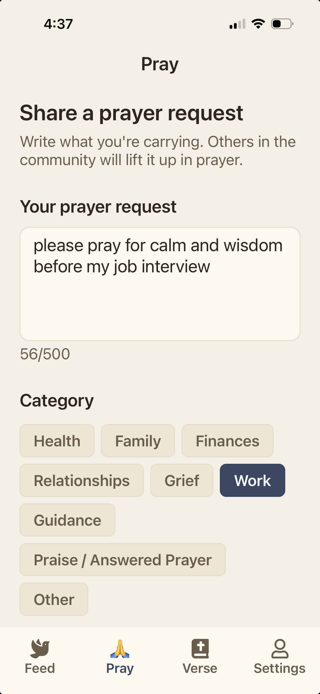
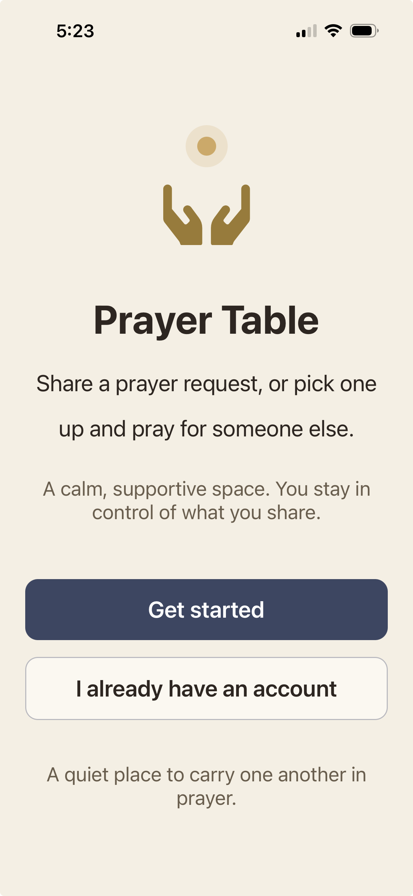
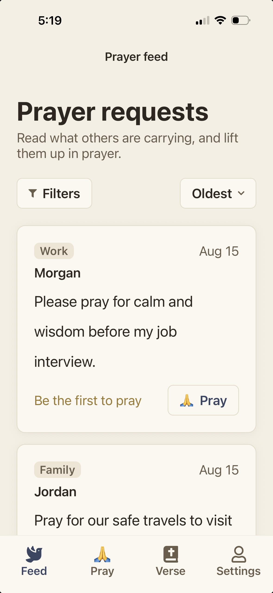
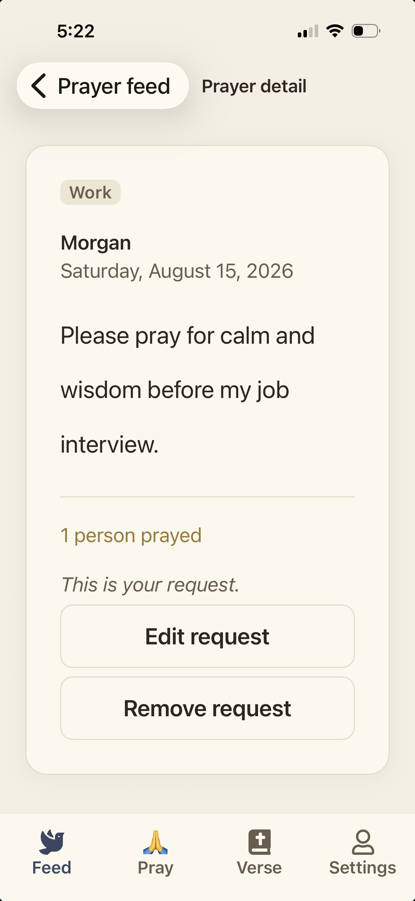
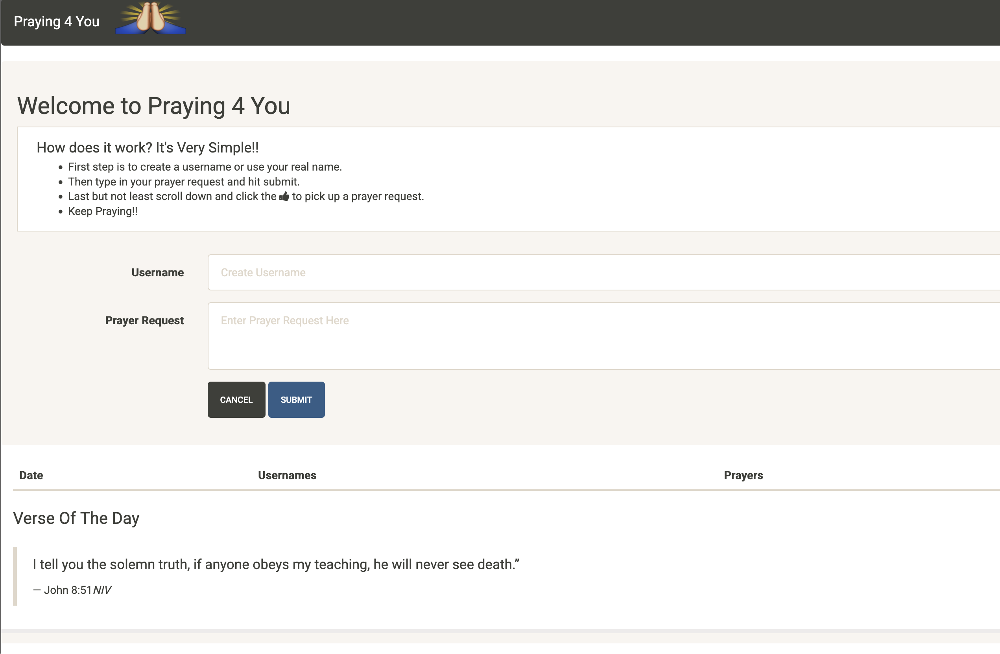
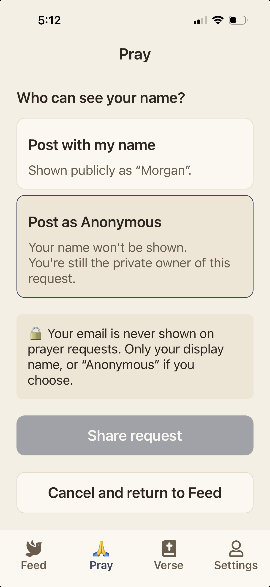
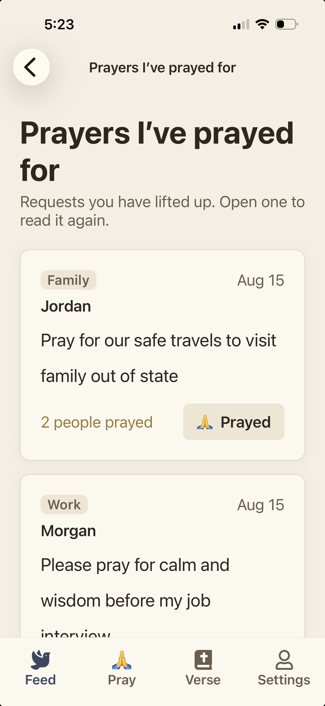

← Back to Prayer Table overview
Full Case Study · Prayer Table · iOS & Android
Prayer Table: How I Turned an Old Class Project Into a Real Mobile App With Two AI Models and an AI Development Team
About ten years after building a simple prayer-request web page as my final project at General Assembly, I rebuilt it as a native iOS and Android app by working with two AI models and a team of role-based AI reviewers, kept every product decision in human hands, and submitted it to the App Store and Google Play on October 2, 2026.
I have spent my career on teams that took apps from ideation to launch. Prayer Table is the first time I did every part of that journey as one person, using AI to cover the roles a team would normally fill while I owned the product decisions.



- Status
- Submitted to the App Store and Google Play, in review
- Timeline
- New repository to store submission in about four months: May 25 to October 2, 2026
- Built with
- Claude (Claude Code), ChatGPT/Codex, Cursor, React Native, Expo, Firebase
At a Glance
From class project to store submission.
- June 2016 “Praying 4 You” built as the final project in Advanced JavaScript Development at General Assembly
- May 25, 2026 Legacy web app preserved in a new repository; the rebuild begins
- May 26, 2026 AI-assisted audit of the original app completed
- June 10, 2026 AI development team defined; Expo app scaffolded; first local prototype phases built and reviewed
- June 13 to 25, 2026 Firebase plan reviewed, then accounts, prayer requests, prayer interactions, reports, account deletion, and a rules test harness built
- July 27, 2026 Product Spark Studio LLC formed
- August 16 to 17, 2026 Beta readiness and user-generated content safeguards completed; first standalone builds; over-the-air updates configured
- August 26, 2026 External iOS beta approved on TestFlight; Android internal testing underway
- September 1, 2026 “Praying For You” renamed “Prayer Table”
- September 2 to 24, 2026 Dark mode, undo a prayer, clearer reporting, prayer updates and Testify, respectful notifications, server-side Terms enforcement
- September 25, 2026 One launch plan replaces six scattered roadmap items
- September 27, 2026 Decision to launch 18+ and reach both stores within two weeks
- September 30 to October 1, 2026 Public-launch safety work built, tested, and put in testers’ hands
- October 2, 2026 Version 1.2.0 submitted to the App Store and Google Play; in review on both, not live
1. The Original Class Project
A student project, audited honestly.
In 2016, I took the Advanced JavaScript Development course at General Assembly. My final project, committed in June 2016, was a small web app called Praying 4 You. The idea was simple: write what you are carrying, submit it as a prayer request, and pick up someone else’s request to pray for.
It was a single HTML page built with jQuery 1.9.1 and Bootstrap 3, storing data in Firebase Realtime Database through version 3 of the Firebase JavaScript SDK. You typed any username you wanted and a prayer request, and it appeared in a table with the date. Other visitors could tap a thumbs-up to show they had prayed. A verse of the day loaded from a public Bible API.

It proved the concept. It was also very much a student project, and when I came back to it in 2026 I asked an AI model to audit it honestly. The audit found what you would expect from a first project:
- No accounts at all. Anyone could post under any name, including someone else’s.
- No moderation, no reporting, no content limits, and no form validation. An empty submission would save.
- Database rules that allowed anyone to read and write everything.
- A vote button that could be pressed any number of times and reloaded the whole page after each press.
- A “God Bless! Your prayer request has been sent” success message that was written into the page but never actually displayed.
- A hosting configuration that pointed at a default placeholder page instead of the app, so the deployed site would not have shown the app at all.
None of that was embarrassing to read. It was useful. The audit separated what was worth keeping (the core idea of leaving a prayer and picking one up) from everything a real product would need: identity, privacy, moderation, safety, and a modern mobile experience.
2. Why Rebuild It Now
The right first test for a new way of working.
The concept never left me, but for years the gap between a class project and a real app felt too wide for one person with a full-time product career.
Two things changed in 2026. First, I had been changing how I worked as a product manager, using AI not just to draft documents but to plan, build, and review real software. A website rebuild for a local business earlier that year showed me that AI could accelerate delivery while product judgment still guided the work. Second, I was building the system that became Product Spark Studio: a reusable way to discover, plan, build, review, and release products, where every product improves the method used to build the next one.
Praying 4 You was the right first test. It was small enough to finish, meaningful enough to care about, and hard in the ways that matter: it handles sensitive, personal content from people who may be going through some of the hardest moments of their lives. If the studio’s way of working could carry this product responsibly to the app stores, it could carry others.
On May 25, 2026, I created a new repository, preserved the original web app exactly as it was, and started the rebuild.
3. Working With Two AI Models
Two models, one product owner.
I built Prayer Table with two AI models: Anthropic’s Claude, used mostly through Claude Code, and OpenAI’s ChatGPT/Codex. Cursor was a supporting tool along the way, not a third model.
How I actually used them.
There was no grand plan for dividing the work. The practical reality was usage limits. I would work with one model until I reached its limit, then continue with the other. Over time, planning skewed toward ChatGPT, while both models built, reviewed, and fixed. That meant a feature could be planned in one model, implemented in the other, and reviewed by whichever one I had available next.
What the record shows.
Claude performed the original legacy app audit on May 26. Most of the committed implementation in the repository carries a Claude co-author line: 81 of the 114 commits through October 1. OpenAI’s ChatGPT/Codex shows up in the record as well: Codex planned the prayer updates feature and ran an independent design, development, and QA and security review before any app code changed; it reviewed the notification design and found real correctness gaps, including an inaccurate claim about how invalid device tokens are detected and a missing development-build setup; and a commit on September 18 records a “Codex hardening pass” on the notification code.
Why the handoff documents mattered.
Switching models in the middle of a feature only works if the next model knows exactly where the last one stopped. So the handoffs were written down. When one session ended, the next started from a handoff document that recorded what had been verified on my phone, what was committed, what was left, and what must not be touched. There are dedicated handoff files written for Claude and for Codex, and each opens with the same kind of warning: inspect the repository first, and never reset, clean, or bulk-commit the working tree. Those documents, along with the planning docs, phase reviews, and written workflows, meant either model could pick up the work without me re-explaining the product.
An unplanned benefit: a second set of eyes.
Because the work kept changing hands, each model often ended up reviewing the other’s output. The clearest example came on September 10. Codex had left uncommitted Firebase work for prayer updates in the working tree when I switched over, and I instructed Claude to inspect that work before trusting it. Claude’s review found and fixed a real security bug in the database rules for update reports before anything was deployed. In the other direction, Codex’s reviews caught mistakes in Claude’s notification design. Neither model was treated as the authority. I made the call.
4. Building an AI Development and Design Team
Roles, not just prompts.
Early in the rebuild I realized that asking one AI model to “review this” produced one blurred opinion. A real product team does not work that way. A designer, a security reviewer, and a release manager look at the same change and notice different things.
So on June 10, before writing app code, I defined an AI development team: a set of original, project-specific role definitions, each with a clear purpose, a review checklist, and a required output format. They are not autonomous agents and they do not change code silently. Each role is a lens that a model applies deliberately, one at a time, and each produces a written review with findings, blockers, follow-ups, and a go or no-go recommendation.
The team grew to twelve roles:
| Role | What it does |
|---|---|
| Product Owner | Keeps work aligned with the product requirements and the current milestone, protects user value, and guards against scope creep. |
| UI/UX Designer | Reviews screens before and after they are built: hierarchy, navigation, accessibility basics, calm and respectful tone, privacy cues, and anti-dark-pattern checks. |
| React Native Engineer | Owns app architecture: Expo, TypeScript, navigation, state, and the seam between the app and its backend. |
| Backend Engineer | Owns Firebase authentication and data modeling, ownership and permissions, soft-remove behavior, cost-aware reads and writes, and security-rule testing. |
| Systems Admin / DevOps | Covers build and distribution setup, configuration and secret safety, environment variables, and repeatable release setup. |
| Code Reviewer | Checks correctness, readability, simplicity, and adherence to the plan for any code change. |
| Security Reviewer | Looks for secrets, unsafe auth assumptions, privacy risks in user-generated prayer content, moderation gaps, and database-rule weaknesses. |
| Test Engineer | Decides how quality is verified: test plans, regression coverage, and automation. |
| QA Engineer | Decides whether the result is good enough for a real user: acceptance criteria, end-to-end flows, edge cases, and mobile usability. |
| Release Manager | Checks git status, expected changed files, validation commands, commit quality, and readiness to push. |
| Legal / Compliance Advisor | An advisory lens, explicitly not legal advice, for privacy policy and terms needs, account deletion, store and user-generated content rules, data retention, and questions to bring to a qualified attorney. |
| Growth / Beta Research Advisor | Plans beta tester selection, feedback goals and survey questions, onboarding clarity, and positioning, while keeping growth and monetization as hypotheses rather than premature work. |
Some distinctions turned out to matter. The Test Engineer and QA Engineer are deliberately separate: one decides how we verify, the other decides whether the result is good enough for a person. The Backend Engineer and Systems Admin roles joined only once the project moved past the local mock prototype toward a real backend. The Legal / Compliance Advisor states in every review that it is not a lawyer and names where an attorney should look.
How the team worked in practice.
A typical phase went like this: the Product Owner confirmed the work belonged in the current milestone, the Designer agreed on layout and tone, the model built the change, then the Code Reviewer, Security Reviewer, Test Engineer, and QA Engineer reviewed it, and the Release Manager checked the commit. The reviews were saved as documents, so the trail of what was checked, and why, is still readable today. Over the rebuild that produced dozens of phase reviews, feature reviews, QA scenario documents, and implementation records, alongside written workflows for documentation, QA, and commits that any session, human or AI, could follow.
Where human judgment stayed in charge.
The team made recommendations. I made decisions. The reviews are advisory by design, and many of them end with an “owner decision needed” line. I decided what was in scope, which findings were blockers, when evidence was enough, and when a build was ready for real people. I tested meaningful changes myself on a real phone before they went to testers. And by standing rule, nothing was built in the cloud, deployed, or submitted without my explicit approval at that moment.
5. The Rebuild, Phase by Phase
Three milestones, three quality bars.
The rebuild followed three milestones I was careful not to confuse: a functional local prototype, a Firebase-backed MVP, and an app-store-ready release. Each had a different quality bar.
Local prototype (June 10 to 12)
The first phases ran on mock data, with no backend, so the product could be judged on experience before infrastructure:
- Phase A, project foundation: the Expo app scaffolded and aligned with Expo Go so it ran on my iPhone the same day.
- Phase B, local accounts and profiles: simulated sign-in and profile creation, followed by device QA on a real iPhone.
- Phase C, the feed and prayer detail: the read path, plus a prayer category model in Phase C.5.
- Phase D, creating a request: the write path, including anonymous posting.
- Phase E, “I prayed for this”: the core interaction that replaced the old thumbs-up.
- Phase F, verse of the day.
- Phase G, navigation fixes, settings and about, and reporting.
- Phase H, polish and demo readiness, followed by three focused passes: visual QA polish, a mobile UX fix pass, and an accessibility and theme foundation pass.
Each phase closed with a written completion review.
Firebase MVP (June 13 to 25)
Phase I was planning only: a Firebase MVP plan written and reviewed before anything was connected, with the Backend Engineer, Systems Admin, and Legal / Compliance Advisor roles joining the panel. Phase J built it: Firebase authentication behind the app’s existing auth layer, user profiles, account deletion, Firestore prayer requests, password management, prayer interactions, and reports. On June 19 a database-rules test harness was added, so security rules were tested automatically rather than assumed. An alpha readiness checklist defined the bar for inviting a small group of trusted testers.
Beta readiness (August 16 to 26)
After the company was formed in July and its organization developer accounts were in place, the work turned to distribution. On August 16 the beta readiness and user-generated content safeguards were completed, including a pre-publication content filter (21 of 21 QA scenarios passed) and the ability to hide another account’s requests (18 of 18 unit tests passing). The first standalone Android build passed QA, and over-the-air updates were configured and verified on August 17. A reviewer demo account strategy was approved for store review.
Continuous improvement through the beta (September)
Once testers were using the app, the work became a loop of feedback, review, and small releases:
- A release environment gate (September 1): builds now fail early if their configuration is wrong.
- Clearer reporting, device-aware dark mode, and undo a prayer (September 2).
- A framework upgrade (September 10) to stay compatible with the iOS testing app.
- Approved beta-feedback changes (September 10): email alignment, an appearance preference, and clearer password copy.
- Prayer updates and Testify (September 10): authors can mark a request Still praying, Answered, or Closed, and optionally share how a prayer was answered.
- Respectful notifications (September 18 to 22): described in the next section.
- Server-side Terms enforcement and a “Recent activity” default feed sort (September 23 to 24).
6. Product Decisions That Shaped It
A prayer journal, not a social feed.
The technology choices were straightforward. The product choices were where the real work was. A design direction written in June set the tone: the app should feel like an old-school Bible or prayer journal, calm and hopeful, and not like a social media feed.
Calm over engagement.
The design direction rules out badges, streaks, leaderboards, trending lists, and counts styled as engagement metrics. Praying for someone is framed as joining them in prayer, not liking a post. The feed shows a quiet prayer count, never a list of who prayed.
Privacy by default.
Email addresses are never shown anywhere public. Other users see only the aggregate prayer count, never individual prayer records. Prayer content is treated as sensitive and is not surfaced in unexpected places. Later, the crash monitoring and report alerts were built specifically so they could not leak it.
Anonymity with private ownership.
Anyone can post anonymously, but anonymous means anonymous display, not no accountability. An anonymous post still belongs to its author privately, so it can be edited, removed, reported, and moderated. The interface says this plainly rather than implying a post is untraceable.
Safety before scale.
The old app had no moderation. The new one has a pre-publication content filter that is deliberately narrow, so it never blocks sensitive topics like grief, illness, or mental health; reporting on requests and updates; the ability to hide another account; Terms acceptance enforced on the server; and soft removal that preserves content for moderation.
Notifications done respectfully.
Notifications were the feature most likely to turn Prayer Table into the kind of app it was not supposed to be, so the guardrails came before the code. Notifications are opt-in, low-frequency, and separately controllable: one for “someone prayed for your request” and one for updates. A device must prove it belongs to the account before it can receive alerts, notification records are kept for 30 days, and the privacy policy was updated and published before the feature reached testers in version 1.1.0 on September 22.
Monetization stays a hypothesis.
The repository’s first README listed lightweight mobile ads as a possible goal, and the design rules said ads must never appear during emotional or prayer-submission moments. In the end, the app is going to the stores free, with no ads and no in-app purchases.
The App
Those decisions, on screen.

Anonymous display, private ownership

A quiet prayer count
7. Beta and Rename
Real testers, and a new name.
On August 26, 2026, Apple approved the first iOS build for external testing through TestFlight, and Android testing was underway through Google Play internal testing. It was the first time a Product Spark Studio product reached outside testers through an official store channel. By the time of the store submission the beta had grown to 23 iOS testers and 10 Android testers, all adults, and their feedback was shaping releases.
The beta also surfaced a problem that had nothing to do with code. After distribution had started, discovery found an existing iOS app with a nearly identical name. Rather than patch it, the studio ran four rounds of naming discovery and a deep check on the leading candidate, and on September 1 chose Prayer Table. The name draws on a real devotional practice, a small place set apart for prayer, and it gave the product its story: people leave a prayer at the table, and others pick one up. A self-run trademark knockout search found no conflicting federal mark; attorney clearance and filing were deferred for cost.
The rename changed what people see and kept the plumbing underneath, so testers and store history carried over. The new name reached testers in version 1.1.0 on September 22, and the store copy, built around “Leave a prayer. Pick one up.”, was approved the next day.
8. From Beta to the Stores (September 25 to October 2)
One plan, one hard trade-off, one week of safety work.
One plan instead of six.
By September 25 the beta was healthy, but there was no single plan to leave it. Pre-public requirements were spread across six roadmap items, with no exit criteria, no go/no-go step, and no rollout or rollback plan. I added one roadmap item and a launch plan that sorted every requirement into gates and recommendations, and defined a release candidate, go/no-go criteria, store rollout steps, rollback paths, and a first-30-days checklist.
The 18+ decision.
On September 27, with a new full-time job starting the next day and no budget for an attorney, I set a company goal of reaching both stores within two weeks. My intended audience had been 14 and older, with youth ministries in mind, but the legal screening so far covered adults only and did not clear ages 14 to 17. I chose to launch 18+ and make “open to ages 14 to 17” a later milestone with its own legal review. That decision excluded my own daughter at launch. It was a real cost, and I accepted it, because launching to minors without the right review would have been worse for the very people the goal was meant to serve.
A written cut list.
Analytics, feed-scale testing, an onboarding redesign, a backup moderator, trademark filing, and a Settings restructure were all deferred in writing. The plan’s proposed seven-day release-candidate soak was compressed into a short tester trial, which is part of why monitoring mattered so much.
Privacy-first safety work (September 30), each piece with tests:
- Crash and error monitoring with Sentry, error-only, with no session replay, screenshots, or tracing, and with scrubbing so no prayer text, user ID, or IP address is included. Development, beta, and production report to separate environments.
- Report alerts to my phone that include only the report reason and content type, so nothing could show prayer text on a lock screen, and that never retry, to avoid duplicate alerts.
- A one-way removal rule so a moderator-removed post cannot be restored or rewritten by a modified client, which also preserves evidence.
- Updated Terms of Use and Privacy Policy with a legal and safety disclosure clause, crash-monitoring disclosure, retention language, and the 18+ requirement, plus a Terms version bump with a database-rules transition window so testers on the older build were never locked out.
- Version 1.2.0, so over-the-air updates containing the new native code can never reach older builds.
The database rules and server-function test suite reached 478 passing tests.
The moderation plan and its review.
I wrote a moderation escalation plan with severity tiers, an honest statement of single-moderator coverage, crisis resources, and child-safety preservation steps. It was reviewed through the AI team’s Legal / Compliance Advisor lens, which is not a lawyer and not legal advice. Two findings went straight into the product: the removal freeze and the disclosure clause. Other questions remain recorded for a future attorney review rather than assumed away.
The moment the monitoring paid off (October 1).
Within hours of the release candidate reaching testers, Sentry captured a real error from one tester’s iPhone: a Terms link had silently failed to open, likely because Safari was restricted on that device. It could not be reproduced on my phone. Without monitoring, it would have been invisible. The fix routes every policy link through a helper that tells the person where to read the page if their device refuses to open it. I verified it on a real device by turning Safari off and back on, and it was merged on October 1. The same review caught that the iOS tester build was on the beta update channel, so separate production-channel builds were made for the stores.
Store submission lessons (October 2).
This was my first App Store submission ever.
- Screenshots had to be rescaled honestly, without stretching, for each required device class.
- The age-rating questionnaire, answered honestly for user-generated content, calculated 13+. I overrode it to 18+ to match the Terms.
- Privacy labels declared sensitive information, health information, and crash data accurately.
- Google Play package registration was completed on its September 30 deadline.
- Registering both developer accounts to the company as an organization avoided Google’s closed-testing requirement for new personal accounts, which can add weeks.
- Both stores are set to hold the release after approval, so I choose launch day.
- A family member who tests on Android confirmed the build on a real device before submission.
9. Outcomes So Far
Submitted, in review, not live.
As of October 2, 2026:
- Submitted, in review, not live. Prayer Table version 1.2.0 is in review on the App Store (iOS build 11) and on Google Play’s production track (version code 13). Neither store has approved it yet. Release is limited to the United States, rated 18+, free, with no ads or in-app purchases.
- From new repository to store submission in about four months: May 25 to October 2, 2026.
- Five days from goal to submission. The two-week store goal was set on September 27; both submissions went in on October 2.
- A documented trail. 114 commits in the product repository through October 1, with written phase reviews, feature reviews, QA scenarios, and implementation records behind them.
- Tested foundations. 478 passing database-rules and server-function tests at the release candidate, plus dedicated unit tests for report alerts, crash-monitoring privacy, notifications, content filtering, and hidden accounts.
- A real beta. 23 iOS and 10 Android adult testers through TestFlight and Google Play internal testing at submission.
- A real bug caught before launch by privacy-respecting monitoring.
There are no public download, usage, or retention numbers yet, and this case study does not claim any.
What’s next
The launch plan tracks these follow-ups: a direct link from the app to the community rules section of the Terms; removing the old Terms version from the database rules once every tester is on 1.2.0; framework patch updates after launch, never right before a submission; a full notification test on a physical Android device and validation of expired-token handling; and original artwork to replace a praying-hands image that appears to be based on a platform emoji design. The first 30 days call for daily checks of crash reports and report alerts and a 30-day review, including planning the separate milestone to open the app to ages 14 to 17 after a proper legal review.
10. Lessons for Building Products With an AI Team
What I would tell the next builder.
- Audit before you build. The most valuable AI work happened before any code: auditing the old app, clarifying what to keep, and planning the path. The code matters, but deciding what to build and why matters more.
- Give AI roles, not just prompts. One model asked to “review this” gives you one blurred opinion. A designer lens, a security lens, and a release lens applied separately notice different things, and writing the roles down makes them repeatable.
- Design a workflow that survives switching models. I moved between two models whenever I hit a usage limit. That only worked because the product’s memory lived in the repository, not in any one chat: requirements, phase reviews, role definitions, workflows, and handoff notes. If a new model can read your files and continue the work, you are not locked into any one tool.
- Let the models check each other. Some of the most important catches in this project came from one model reviewing the other’s work: a security bug in database rules, and incorrect assumptions in a notification design. Treat neither as the authority.
- Write handoffs like you would for a human teammate. Record what was verified, what was committed, what is left, and what must not be touched. Context does not carry over between sessions unless you write it down.
- Keep decisions with the human, and make that structural. Reviews were advisory by design. Every build, deploy, and submission needed my explicit approval, and meaningful changes were validated on a real phone. The discipline is what made speed safe.
- Write the product’s values down before the risky features. Calm over engagement, privacy by default, and opt-in notifications were decided before notifications, analytics, or monetization were built, which made those features easier to get right.
- Name your trade-offs honestly. Launching 18+ shortened the path more than any engineering did. It also excluded people I care about. Saying both made the decision easier to stand behind.
- Be clear about what an AI review is not. An AI legal and compliance lens is useful for finding questions. It is not a lawyer, and the questions it raises stay open until a qualified attorney looks at them.
- Every product should improve the system. The roles, workflows, review templates, and launch plan built for Prayer Table now belong to Product Spark Studio, so the next product starts further ahead.
Prayer Table